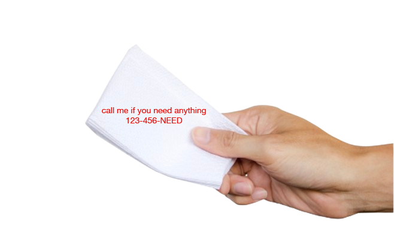
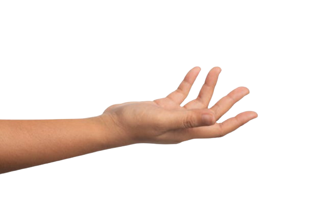

Do You Need Anything?
This love language centers on doing activities that make life easier or more enjoyable for the other person, such as running errands, picking up the dry cleaning, doing the grocery shopping, ord other household chores.
In Korean culture, it is often an act of service to put food on another persons plate. It’s more of an overwhelming act of hospitality but it is often taken as a sign of care. Wouldn’t that make you feel loved?